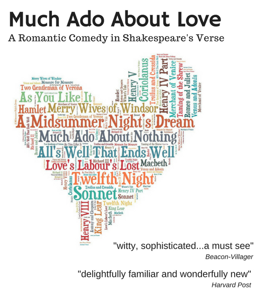
Featured Link
Much Ado About Love
Much Ado About Love is an entirely new Romantic Comedy crafted using only Shakespeare's original verse.
Creative
Artistic collaboration brings the written page to life.

Portfolio
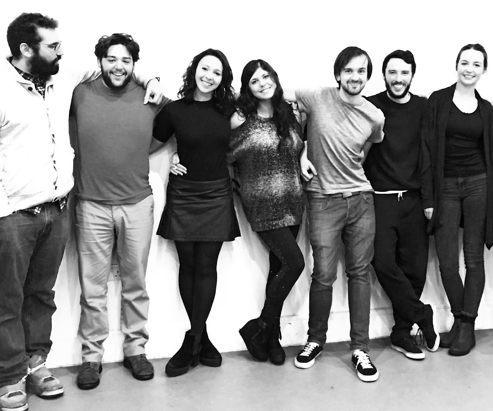
Workshop
Directed by Jamie Rocha Allan.
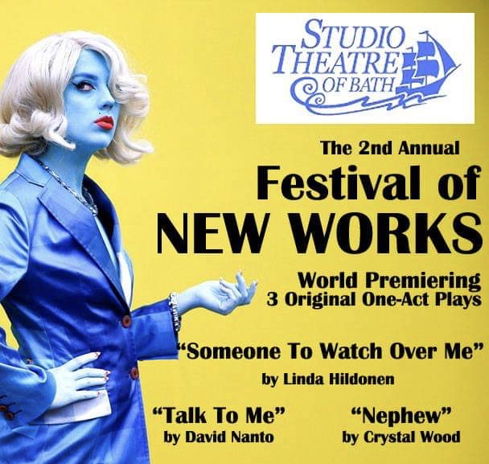
Production
Studio Theatre Bath.
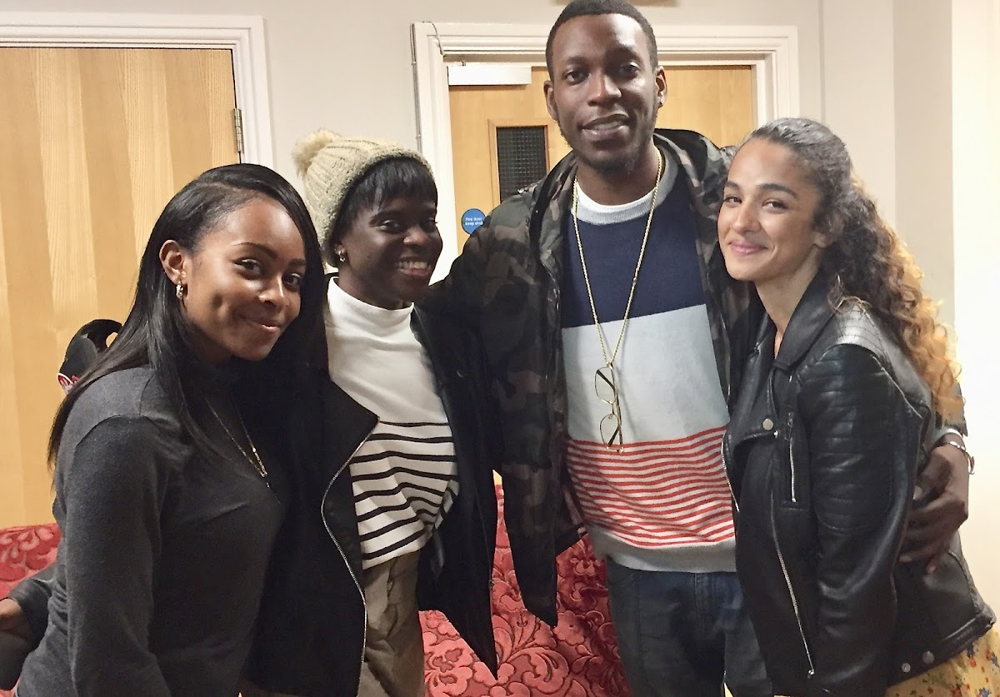
Development
As part of the process of writing a new play, I've been interviewing some amazing actors about their lives in London.
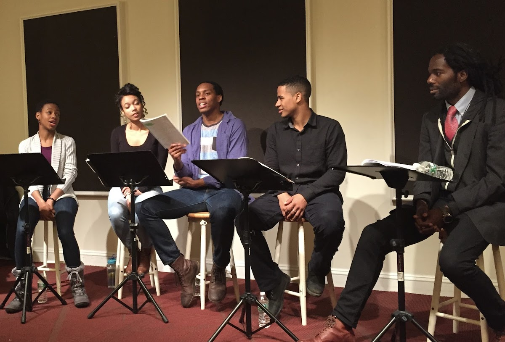
Workshop
Directed by Johnny Lee Davenport.
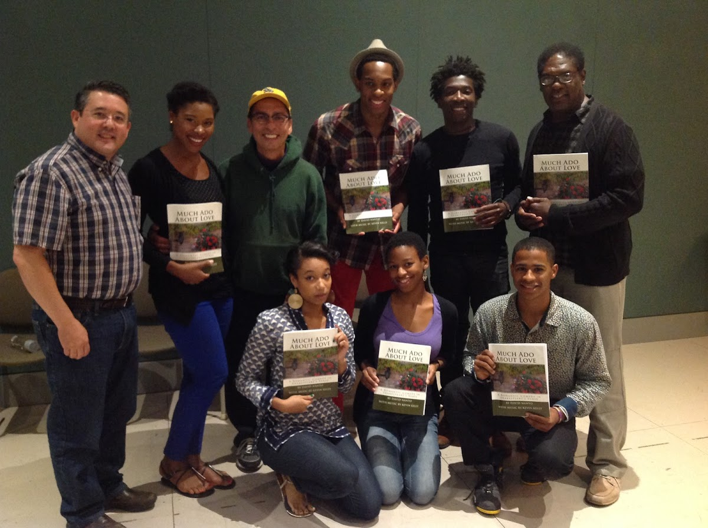
Fringe
Directed by Johnny Lee Davenport. Shakespeare and Co. Lennox, MA.
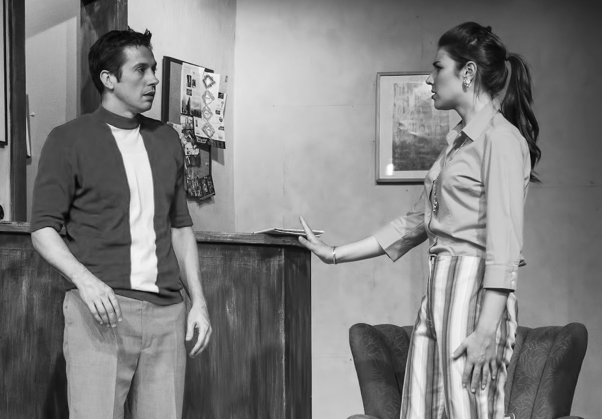
Production
Directed by David Nanto. Theatre III, Acton, MA.
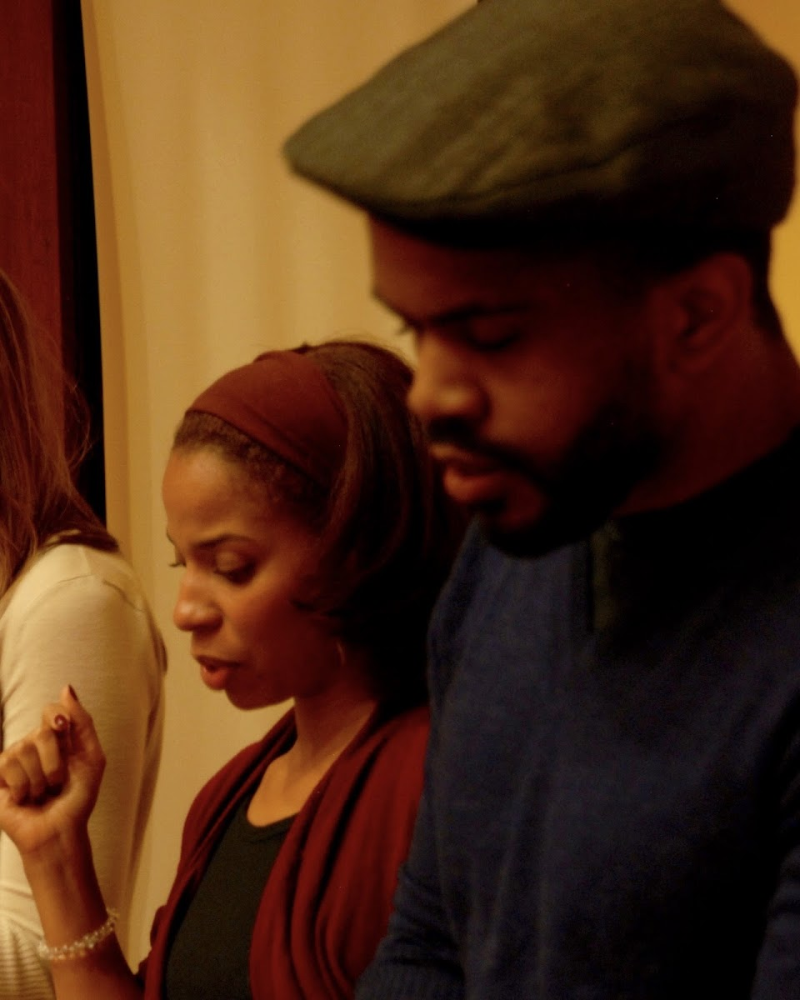
Lecture Series
Directed by David Nanto. Harvard, MA.
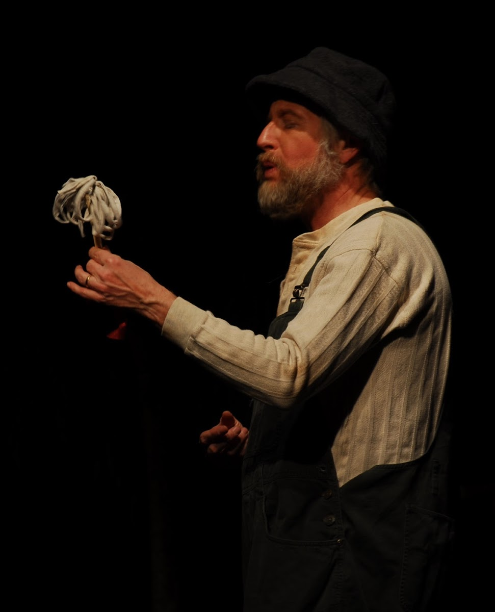
Production
Produced and directed by David Nanto. Present Players, Groton, MA.
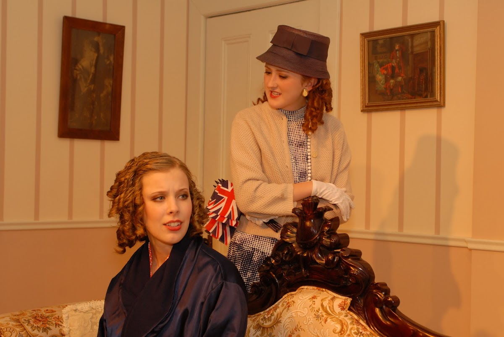
Production
Directed by David Nanto. Cannon Theatre, Littleton, MA.
Film
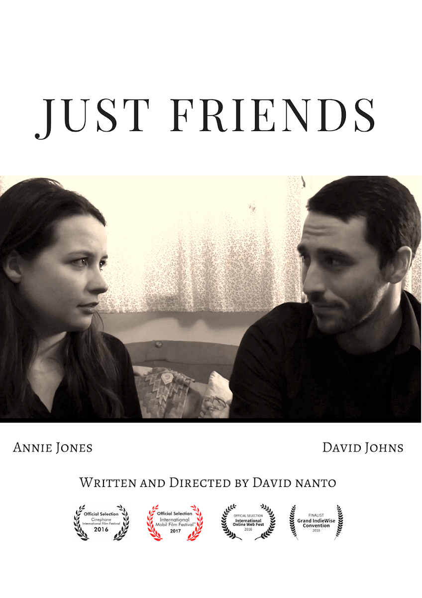
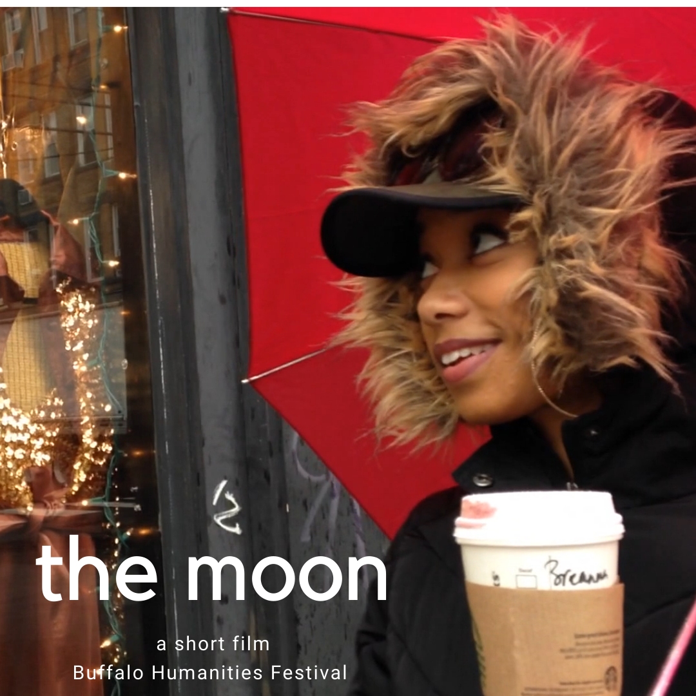
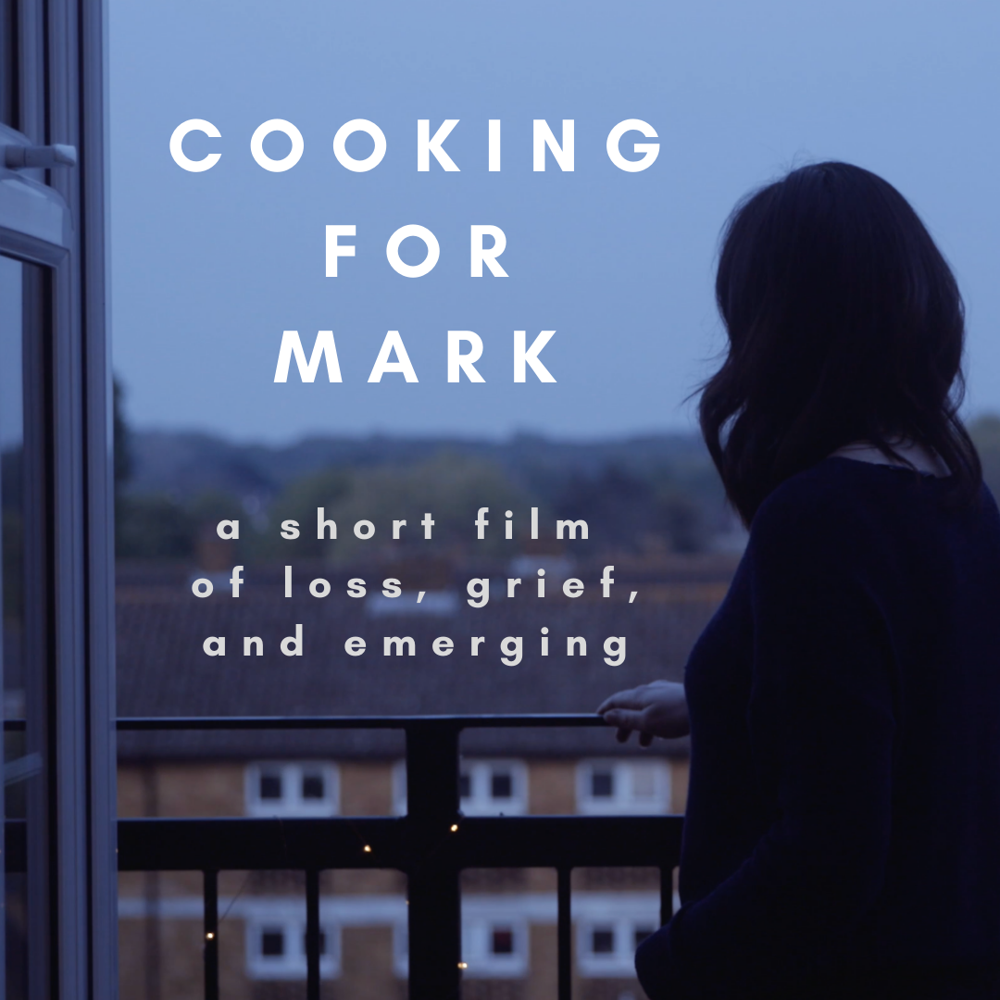